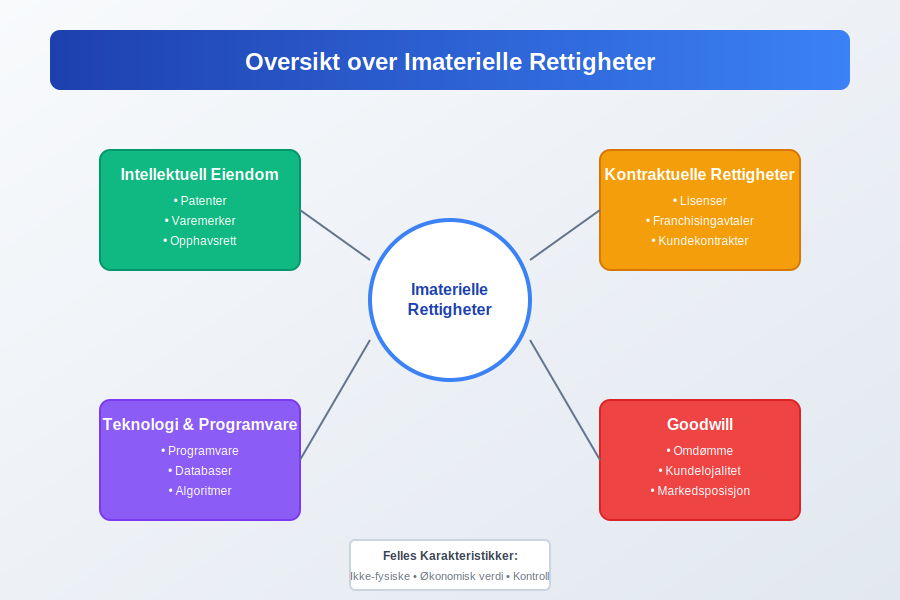
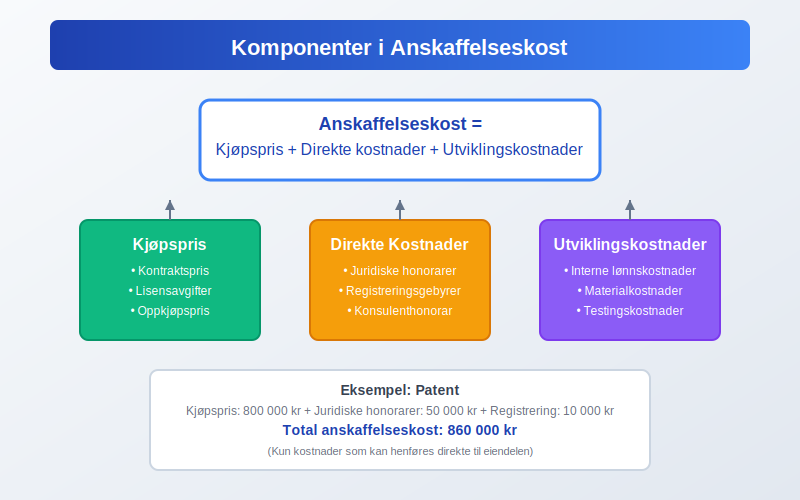
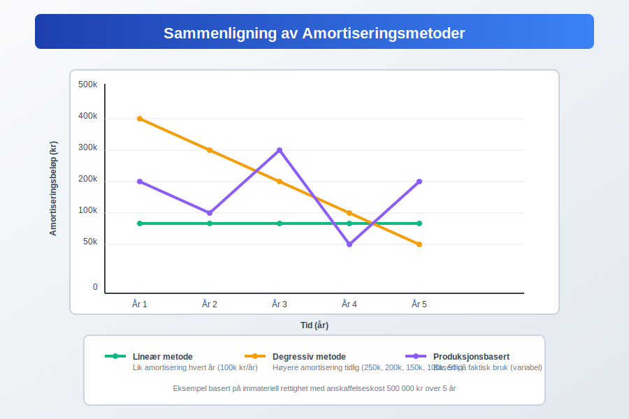
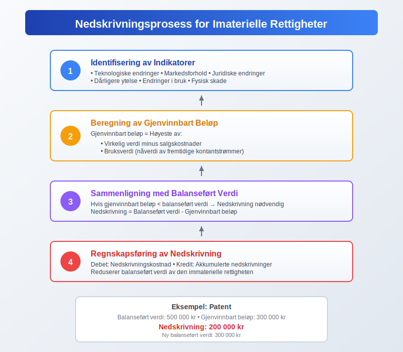
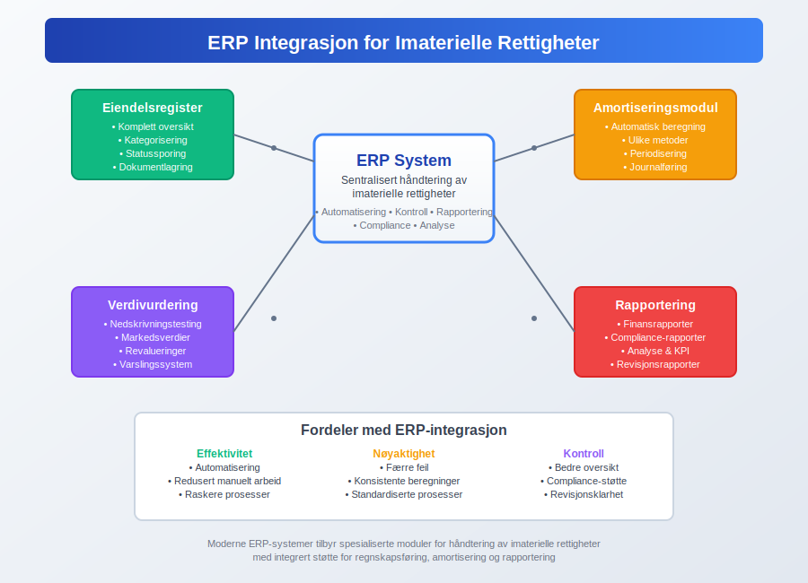

Imaterielle rettigheter er ikke-fysiske eiendeler som har økonomisk verdi for en virksomhet. Disse eiendelene representerer intellektuell eiendom, juridiske rettigheter og andre verdifulle ressurser som ikke kan berøres fysisk, men som likevel bidrar betydelig til en bedrifts verdi og konkurranseevne. I regnskapssammenheng klassifiseres imaterielle rettigheter som anleggsmidler og behandles som en viktig del av virksomhetens totale eiendeler.
For en mer helhetlig forståelse av immaterielle eiendeler i regnskap, se Hva er imaterielle eiendeler?.
For å sikre korrekt regnskapsføring av imaterielle rettigheter, er det essensielt å følge god regnskapsskikk og gjeldende standarder for verdivurdering og amortisering.

Seksjon 1: Typer Imaterielle Rettigheter
Imaterielle rettigheter kan kategoriseres i flere hovedgrupper, hver med sine unike karakteristikker og regnskapsmessige behandling.
1.1 Intellektuell Eiendom
Intellektuell eiendom omfatter kreative og innovative verk som er beskyttet av lov:
- Patenter: Eksklusive rettigheter til oppfinnelser og teknologiske løsninger
- Varemerker: Beskyttede merker, logoer og handelsnavn
- Opphavsrett: Rettigheter til litterære, kunstneriske og musikalske verk
- Designrettigheter: Beskyttelse av estetisk utforming av produkter
- Forretningshemmeligheter: Konfidensielle forretningsmetoder og prosesser
1.2 Kontraktuelle Rettigheter
Disse rettighetene oppstår fra juridiske avtaler og kontrakter:
- Lisenser: Rettigheter til å bruke andres intellektuelle eiendom
- Franchisingavtaler: Rettigheter til å drive virksomhet under etablerte merkevarer
- Ikke-konkurranseklausuler: Avtaler som begrenser konkurranse
- Kundekontrakter: Langsiktige avtaler med kunder
- Royaltyavtaler: Avtaler om løpende vederlag basert på bruk av immaterielle rettigheter. Se Royalty.
1.3 Teknologi og Programvare
I den digitale tidsalderen utgjør teknologiske eiendeler en betydelig del av imaterielle rettigheter:
- Programvare: Utviklede eller kjøpte programvareløsninger
- Databaser: Strukturerte samlinger av informasjon
- Algoritmer: Proprietære beregningsmetoder
- Domenenavn: Internettadresser og digitale identiteter
1.4 Goodwill
Goodwill er en spesiell kategori av immateriell rettighet som oppstår ved oppkjøp av virksomheter. Den representerer verdien av faktorer som omdømme, kundelojalitet, ansattes kompetanse og andre ikke-identifiserbare eiendeler.
Seksjon 2: Regnskapsføring av Imaterielle Rettigheter
Regnskapsføring av imaterielle rettigheter følger spesifikke prinsipper og standarder som sikrer korrekt presentasjon i finansregnskapet.
2.1 Innregningskriterier
For at en immateriell rettighet skal kunne innregnes i balansen, må følgende kriterier være oppfylt:
| Kriterium | Beskrivelse | Eksempel |
|---|---|---|
| Identifiserbarhet | Eiendelen må være separerbar eller oppstå fra kontraktuelle rettigheter | Patent som kan selges separat |
| Kontroll | Virksomheten må ha kontroll over fremtidige økonomiske fordeler | Eksklusiv lisens til teknologi |
| Fremtidige fordeler | Eiendelen må forventes å gi økonomiske fordeler | Varemerke som genererer salg |
| Pålitelig måling | Anskaffelseskost må kunne måles pålitelig | Dokumentert kjøpspris |
2.2 Innregning ved Anskaffelse
Imaterielle rettigheter innregnes til anskaffelseskost, som inkluderer:
- Kjøpspris: Beløp betalt for rettigheten
- Direkte kostnader: Juridiske honorarer, registreringsgebyrer
- Utviklingskostnader: Interne kostnader for utvikling (under visse betingelser)

2.3 Etterfølgende Måling
Etter innregning kan imaterielle rettigheter måles etter to modeller:
Kostmodellen:
- Anskaffelseskost minus akkumulerte avskrivninger og nedskrivninger
Revalueringsmodellen:
- Virkelig verdi på revalueringstidspunktet minus etterfølgende avskrivninger og nedskrivninger
Seksjon 3: Amortisering og Avskrivning
Amortisering av imaterielle rettigheter følger systematiske prinsipper basert på eiendelens nyttbare levetid.
3.1 Bestemmelse av Nyttbar Levetid
Nyttbar levetid kan være:
- Begrenset: Basert på juridisk beskyttelse, kontraktuelle avtaler eller økonomiske faktorer
- Ubegrenset: Når det ikke er noen forutsigbar grense for perioden eiendelen vil generere kontantstrømmer
3.2 Amortiseringsmetoder
| Metode | Beskrivelse | Anvendelse |
|---|---|---|
| Lineær | Lik amortisering hvert år | Mest vanlig for patenter og lisenser |
| Produksjonsbasert | Basert på faktisk bruk eller produksjon | Programvare med bruksbaserte lisenser |
| Degressiv | Høyere amortisering i begynnelsen | Teknologi med rask utvikling |

3.3 Praktiske Eksempler på Amortisering
Eksempel 1: Patent
- Anskaffelseskost: 1 000 000 kr
- Juridisk beskyttelse: 20 år
- Årlig amortisering: 50 000 kr
Eksempel 2: Programvarelisens
- Anskaffelseskost: 500 000 kr
- Kontraktslengde: 5 år
- Årlig amortisering: 100 000 kr
Seksjon 4: Verdivurdering og Nedskrivning
Regelmessig vurdering av imaterielle rettigheters verdi er kritisk for korrekt regnskapsføring.
4.1 Nedskrivningstesting
Imaterielle rettigheter med ubegrenset levetid og goodwill må testes for nedskrivning minst årlig. Eiendeler med begrenset levetid testes når det er indikasjoner på verdifall.
4.2 Indikatorer på Verdifall
-
Eksterne faktorer:
- Teknologiske endringer
- Markedsforhold
- Juridiske endringer
-
Interne faktorer:
- Dårligere ytelse enn forventet
- Endringer i bruk
- Fysisk skade på underliggende eiendeler
4.3 Beregning av Nedskrivning
Nedskrivning beregnes som forskjellen mellom balanseført verdi og gjenvinnbart beløp:
Gjenvinnbart beløp = Høyeste av:
- Virkelig verdi minus salgskostnader
- Bruksverdi (nåverdi av fremtidige kontantstrømmer)

Seksjon 5: Spesielle Regnskapsområder
5.1 Forskning og Utvikling
Kostnader til forskning og utvikling behandles forskjellig:
- Forskningskostnader: Kostnadsføres når de påløper
- Utviklingskostnader: Kan aktiveres hvis strenge kriterier er oppfylt
5.2 Internt Genererte Imaterielle Rettigheter
Spesielle regler gjelder for internt utviklede eiendeler:
| Type | Regnskapsbehandling | Begrunnelse |
|---|---|---|
| Varemerker | Kostnadsføres | Vanskelig å skille fra goodwill |
| Kundelister | Kostnadsføres | Ikke separerbare |
| Programvare | Kan aktiveres | Hvis teknisk og kommersiell gjennomførbarhet |
5.3 Immaterielle Rettigheter i Oppkjøp
Ved virksomhetsoppkjøp må imaterielle rettigheter identifiseres og verdsettes separat fra goodwill:
- Identifiserbare eiendeler: Verdsettes til virkelig verdi
- Ikke-identifiserbare eiendeler: Inngår i goodwill
Seksjon 6: Praktisk Implementering
6.1 Dokumentasjon og Kontroll
Effektiv håndtering av imaterielle rettigheter krever:
- Register: Komplett oversikt over alle rettigheter
- Dokumentasjon: Kontrakter, registreringer, verdivurderinger
- Overvåking: Regelmessig oppfølging av verdier og rettigheter
6.2 Integrasjon med ERP-systemer
Moderne ERP-systemer tilbyr spesialiserte moduler for håndtering av imaterielle rettigheter:
- Automatisk amortiseringsberegning
- Nedskrivningstesting
- Rapportering og analyse

6.3 Skattemessige Konsekvenser
Skattemessig behandling av imaterielle rettigheter kan avvike fra regnskapsmessig behandling:
- Avskrivningssatser: Kan være forskjellige fra regnskapsmessig amortisering
- Fradragsrett: Ikke alle kostnader er fradragsberettigede
- Gevinst/tap: Spesielle regler ved salg
For en grundig forståelse av skattemessige fradrag knyttet til imaterielle rettigheter, se vår omfattende guide.
Seksjon 7: Bransjespesifikke Betraktninger
7.1 Teknologisektoren
I teknologiselskaper utgjør imaterielle rettigheter ofte majoriteten av selskapets verdi:
- Programvare: Både utviklet og kjøpt
- Patenter: Teknologiske innovasjoner
- Databaser: Kundedata og algoritmer
7.2 Farmasøytisk Industri
Spesielle utfordringer i farmasøytisk sektor:
- Lange utviklingsperioder: Høye forskningskostnader
- Regulatoriske godkjenninger: Verdifulle rettigheter
- Patentutløp: Betydelig verdifall
7.3 Mediebransjen
Kreative industrier har unike imaterielle rettigheter:
- Opphavsrett: Musikk, filmer, bøker
- Merkevarer: Karakterer og franchiser
- Distribusjonrettigheter: Geografiske og tidsmessige rettigheter
Seksjon 8: Fremtidige Utviklingstrender
8.1 Digitalisering og Nye Teknologier
Teknologisk utvikling skaper nye kategorier av imaterielle rettigheter:
- Kunstig intelligens: Algoritmer og maskinlæringsmodeller
- Blockchain: Kryptovalutaer og smarte kontrakter
- Data: Persondata og big data-analyser
8.2 Regulatoriske Endringer
Utviklingen i regnskapsstandarder påvirker behandlingen av imaterielle rettigheter:
- IFRS-oppdateringer: Nye standarder for måling og rapportering
- Skattelovgivning: Endringer i fradragsregler
- Personvernlovgivning: Påvirker verdien av databaser
8.3 ESG og Bærekraft
ESG-faktorer påvirker også imaterielle rettigheter:
- Miljøsertifiseringer: Verdifulle rettigheter i grønne markeder
- Sosial lisens: Omdømme og samfunnsansvar
- Governance: Etiske standarder og compliance
Konklusjon
Imaterielle rettigheter representerer en stadig viktigere del av moderne virksomheters verdi. Korrekt regnskapsføring, verdivurdering og håndtering av disse eiendelene er avgjørende for:
- Finansiell rapportering: Rettvisende presentasjon av virksomhetens verdi
- Strategisk planlegging: Forståelse av konkurransefortrinn
- Risikostyring: Identifisering og håndtering av verdirisikoer
- Compliance: Overholdelse av regnskaps- og skatteregler
Ved å følge etablerte prinsipper for bokføring og regnskapsføring, samt holde seg oppdatert på utviklingen innen standarder og regulering, kan virksomheter sikre optimal håndtering av sine imaterielle rettigheter.
For virksomheter som ønsker å optimalisere sin regnskapsføring av imaterielle rettigheter, anbefales det å konsultere med kvalifiserte regnskapsførere og revisorer som har spesialkompetanse på området.